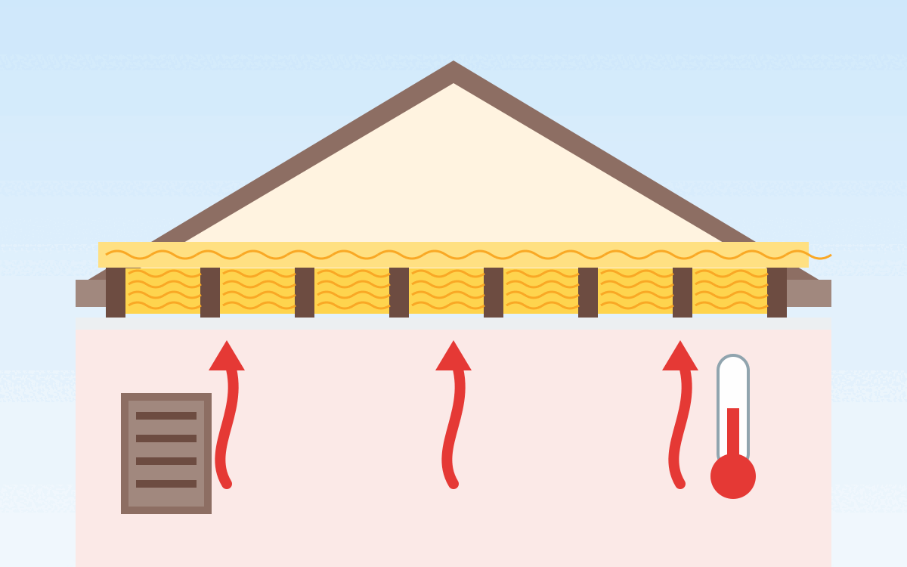

Dämmstoffe haben neben ihrer Dämmwirkung noch weitere relevante Eigenschaften:
- Preis
- Schimmelanfälligkeit
- Wasserdurchlässigkeit
- Wasserdampfdiffusionswiderstand: Gibt an, um welchen Faktor der Stoff diffusionsdichter ist als gleichdicke Luft. Der Wert kann nicht unter 1 liegen, geht aber beliebig hoch. Glas hat z.B. einen Wert von unendlich.
- Kapillaraktivität: Kann Feuchtigkeit wegtransportieren.
- Wasseraufnahme
- Brandklasse
Anwendung
Anwendungsgebiete sind:
- Wände (innen)
- Wände (außen; auch: Fassade)
- Decken
- Dach (innen): Zwischensparren, Untersparren
- Dach (außen): Aufsparren
Je nach Anwendungsgebiet gibt es unterschiedliche Anforderungen an den Umgang mit Feuchtigkeit und mechanischen Belastungen.
Wärmeleitfähigkeit
- λ-Wert = W/(m·K): Je kleiner der Lambda-Wert, umso weniger Wärme lässt das Material bei gleicher Dicke passieren.
- R-Wert = d / λ = (m²·K) / W: Je höher der Wärmedurchlasswiderstand eines Bauteils, umso weniger lässt es Wärme entweichen.
- U-Wert = 1 / R = W/(m²·K): Je kleiner der U-Wert, umso besser ist der Wärmeschutz.
Den Lambda-Wert gibt man für Baustoffe an, den U-Wert für Bauteile.
Die Verlustleistung \(Q\) (in Watt) berechnet sich aus:
- \(U\): Dem U-Wert in W/(m²·K)
- \(A\): Der Fläche des Bauteils in m²
- \(\Delta T\): Der Temperaturdifferenz zwischen innen und außen in Kelvin
Die Normaußentemperatur beträgt in vielen Gegenden -13°C (oder wärmer). Wir wollen +23°C erreichen, haben also \(\Delta T = 36\).
Beispiele
| Baustoff | Preis | Brandschutzklasse | Resistent gegen Insekten und Nagetiere | Lambda (WLG) | U-Wert (1cm) | U-Wert (10cm) | Dichte | Energieverlust pro m² bei 10cm | Wasserdampfdiffusionswiderstand µ | Kapillaraktivität | Weiteres |
|---|---|---|---|---|---|---|---|---|---|---|---|
| Mineralwolle (Glaswolle als Rolle) | 9.50 €/m² für 10cm | A1 | ✔ | 0.035 W/mK | 3.5 | 0.35 | ... | 12.6 W/m² | 1 | 0 | Saugt sich bei Nässe voll und trocknet nur langsam wieder. Dadurch kann sich Schimmel bilden1 - gut, wenn es trocken ist, also nicht als Zwischensparrendämmung im Dach!3 |
| Mineralfaserplatten (Steinwolle als Platte) | 24 €/m² | A1 | ✔ | 0.039 W/mK | 3.9 | 0.39 | 150 kg/m³ | 14 W/m² | 1 | verrottungsfest und unangreifbar von Fäulnis und Schimmel | |
| Mineraldämmplatten | 40 €/m² bei 10cm | A1 | ✔ | 0.042 - 0.045 W/mK | 4.5 | 0.45 | 90 - 115 kg/m³ | 16.2 W/m² | 2-5 | ++ | schimmelresistent; unverrottbar |
| Kalziumsilikatplatte ("CaSi Klimaplatte") | TODO €/m² | A1 | ✔ | 0.070 W/mK | 7 | 0.7 | 230 - 265kg/m³ | 25.2 W/m² | 5-20 | +++ | stark gegen Schimmel |
| Poroton T7 | 23 €/m² bei 24.8cm Dicke | F 90-A | ✔ | 0.070 W/(mK) | 7 | 0.7 | 550 kg/m³ | 25.2 W/m² | 4-5 | ✔ | |
| Polyurethan Hartschaum (PUR) | 19 €/m² bei 10cm | B2 | ✘1 | 0.023 W/mK | 2 - 4 | 0.2 - 0.4 | ... | 10.8 W / m² | 60 | ||
| Expandiertes Polystyrol (EPS), Extrudiertes Polystyrol (XPS), Polystyrol ("Styropor") | 17 €/m² für 12cm | B1 - B2 | ✘1 | 0.032 - 0.040 W/mK | 3.2 - 4 | 0.32 - 0.4 | 31 - 39 kg/m³ | 13.0 W/m² | 60 - 150 | ||
| Holzfaserdämmplatten | 23 €/m² für 10cm Dicke | E | ✔2 | 0.040 W/mK | 4.0 | 0.40 | 250 kg/m³ | 14.4 W/m² | 5-10 | resistent gegen Verrottung/Pilzbefall2 | |
| Beton | TODO €/m² | A1 | ✔ | 1.4 W/mK | 140 | 14 | ... | 504 W/m² | 70 – 150 |
Wenn man jetzt ein 11m × 11m Haus hat, sich überlegt, ein Geschoss (2,5m) mit ca. 20% Fenstern zu dämmen und man aktuell einen U-Wert von 1.7 W/(m²·K) hat, dann wäre der Verlust aktuell bei
Das könnte mit einer 10cm XPS-Platte, die auf die Mauer aufgebracht wird, reduziert werden. Der neue U-Wert kann über die R-Werte berechnet werden:
also:
Würde man 20cm aufbringen:
Bei den 88m² Fläche (4 · 11m · 2,5m · 0,8) und 36K Temperaturdifferenz ist die Wärmeverlustleistung:
- U-Wert 1.7: 5.4 kW
- U-Wert 0.3: 0.95 kW
- U-Wert 0.16: 0.5 kW
Bei angenommenen 10 Tagen mit dieser Kälte und weiteren 20 Tagen, um für die vielen weniger kalten Tage zu rechnen, die dennoch Wärmeverlust haben, also 720h:
- U-Wert 1.7: 5.4 kW · 720h = 3888 kWh
- U-Wert 0.3: 0.95 kW · 720h = 684 kWh
- U-Wert 0.16: 0.5 kW · 720h = 360 kWh
Heizöl kostet aktuell ca. 1.13€/L und bringt 9.8 kWh/L, d.h. 0.12€/kWh:
- U-Wert 1.7: \(5.4 kW \cdot 720h \cdot 0.12 \frac{EUR}{kWh}= 467€\)
- U-Wert 0.3: \(0.95 kW \cdot 720h \cdot 0.12 \frac{EUR}{kWh} = 82€\)
- U-Wert 0.16: \(0.5 kW \cdot 720h \cdot 0.12 \frac{EUR}{kWh}= 43€\)
Dämmung am eigenen Haus
Ich möchte mein Haus besser dämmen, um Energie zu sparen. Hier sammle ich ein paar Ideen dazu.
{kind=link}

U-Werte
Es gibt drei Arten von Wärmeverlusten:
- Teilchenbewegung:
- Wärmeleitung (Konduktion): Gut ist hier z.B. EPS/XPS/Mineralwolle/Holzfasern. Wenn man allerdings z.B. nur lose Holzfasern hat, könnte man durch Wärmeströmung (Luftzug) Wärme verlieren.
- Wärmeströmung (Konvektion): Wärmeabtransport durch Luftbewegung. Das ist z.B. bei einer Mülltüte nicht der Fall. Dennoch dämmt eine Mülltüte nicht, da Konduktion und Radiation dominieren.
- Wärmestrahlung (Radiation): Kann man z.B. mit einer Aluminiumbeschichtung reduzieren.
Die Begriffe λ-Wert, R-Wert und U-Wert sind oben erklärt. Hier die wichtigsten U-Werte für verschiedene Bauteile:
| Bauteil | U-Wert (W/(m²·K)) | |||
|---|---|---|---|---|
| KfW-55 | Passivhaus | Niedrigenergiehaus | Mein Haus | |
| Außenwand | 0.20 | 0.155 | 0.30 | 1.39 |
| Oberste Geschossdecke | 0.144 | 0.10 | 0.20 | ? |
| Kellerwand | 0.254 | 0.155 | 0.40 | 5 (36cm Beton) |
Oberste Geschossdecke
Dachboden-Decke
Mein Dachboden hat ca. 10.40m x 4.74m, davon muss die Dachbodentreppe mit 120cm x 70cm und der Schornstein mit 98x42cm abgezogen werden. Es sind Dielen auf den Balken.
Das sind ca. 48m² Fläche. Bei zwei Lagen brauche ich also ca. 100m² Dämmung.
Da die Raumhöhe zu gering ist, kann man den Dachboden nicht als Wohnraum nutzen. Im besten Fall kann man ihn als Lagerraum nutzen.
Der Dachboden ist unbeheizt: Im Sommer wird es sehr heiß, im Winter sehr kalt. Bei den Giebeln gibt es jeweils eine kleine Öffnung für die Belüftung.
Aus diesem Grund will ich Glaswoll-Rollenmatten (λ=0.035 W/(m·K)) mit insgesamt 40cm Dicke verlegen. Das ergibt einen U-Wert von U=λ/d=0.035/0.4=0.0875 W/(m²·K).
Unter den Balken sind 15cm Platz, der Balken ist 20cm hoch. Also würde ich eine 15cm dicke Matte und eine 20cm dicke Matte nehmen.
Optionen:
- 16cm Glaswolle (λ=0.032 W/(m·K)) Rolle: 15.20€/m²: bausep.de/aktion-dachbodendaemmung-wlg-032-glaswo…
- Dämmständer: bausep.de/isocell-woodyfix-daemmstaender.html?361…
- 16cm Glaswolle (λ=0.035 W/(m·K)) Rolle: 15.53€/m²: baustoffshop.de/knauf-insulation-kerndammrolle-ti…
- 18cm Glaswolle (λ=0.035 W/(m·K)) 125cm x 60cm für 22.69€: baustoffshop.de/knauf-insulation-kerndammplatte-t…
Dachbodentreppe
Maßnahmen:
- 200€ DOLLE Bodentreppe wärmegedämmt U-Wert 1,16 120 x 70 cm: Ob das so viel besser ist als meine alte Treppe, in die ich manuell Styropor eingelegt habe?
- Dachboden-Treppen-Isolierabdeckung: Ich brauche 67cm x 117cm x 35cm (Innenmaße der Luke), also: 2x 35x117 + 2x 35x67 + 117x67.
- amazon.de/…/B0CT5FHZ7C 140x67, 23.50€, Verkauf von wendry, 448g, eine Bewertung, mit Reißverschluss
- amazon.de/…/B0DNMZDMDL 140x67, 28.59€, Verkauf von shangbaiyi store, 440g, keine Bewertung
- amazon.de/…/B0D69S8TG8 : 1m x 10m x 3mm, 30.99€
Kellerwände
Außenwand zur Garage
Mit 32cm EPS (λ=0.035 W/(m·K)) kommt man auf einen U-Wert von 0.11 W/(m²·K).
TODO: Wie groß ist die Fläche?
- bausep.de/fassadenplatte-eps-wdv-neo-032-1000-x-5… - 24.44€/m² bei WLS 032 mit 20cm
Sockel unter Tür
TODO: Tutorial für Sockeldämmung
- Klebe- und Armierungsmörtel?
- Maueranker? / Schlagdübel?
- Putz?
- Armierungsgewebe?
-
Auf Boden oder auf Sockelschiene kleben?
-
bausep.de/sockeldaemmplatte-eps-035-500-x-1000-mm… 33.40€/m² bei 20cm, WLS 035
- bausep.de/ursa-xps-d-n-iii-l-perimeterdaemmung-mi… : 19.20€/m² bei 12cm WLS 036
- baustoffshop.de/knauf-dammplatte-eps-standard-035… : 36.60€/m² bei 40cm WLS 035
Einzelnachweise
-
n-tv.de: Welcher Dämmstoff ist wofür geeignet?, 2019. ↩
-
architekt-riebler.at: Holzfaser-Dämmplatten ↩
-
Der Fachwerker: Finger weg von diesen 3 Dämmstoffen! ↩
-
KfW: Anlage zum Merkblatt Energieeffizient Bauen auf kfw.de, 01.01.2020. ↩
-
Qualitätsanforderungen an Passivhäuser auf passiv.de, abgerufen am 02.11.2025. ↩